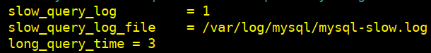
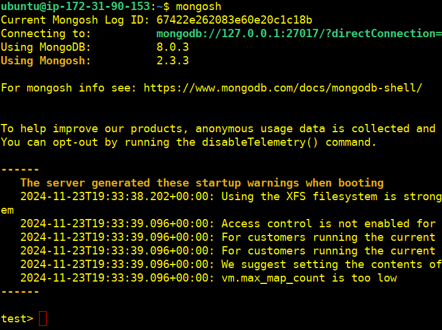
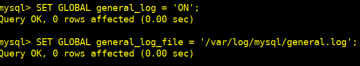

Examen-22-11-24
1.- Máquina 2 (server-mysql)
Cambiamos el "prompt" del terminal y instalamos el mysql-server
sudo hostnamectl set-hostname sever-mysql
sudo apt update
sudo apt dist-upgrade -y
sudo apt autoremove
sudo apt install mysql-server -y
sudo systemctl status mysql
Para permitir que MySQL acepte conexiones desde cualquier IP, necesitamos modificar el archivo de configuración de MySQL, específicamente el parámetro bind-address
Accedemos al Archivo de Configuración de Mysql: /etc/mysql/mysql.conf.d/mysqld.cnf
sudo nano /etc/mysql/mysql.conf.d/mysqld.cnf
- Modificamos el parámetro
bind-address
text
De `bind-address = 127.0.0.1`
A `bind-address = 0.0.0.0`

- Configuramos el idioma del servidor a español.
[mysqld]
lc_messages = es_ES

- Habilitamos el log de consultas lentas en el mismo fichero de configuración.
slow_query_log = 1
long_query_time = 3
slow_query_log_file = /var/log/mysql/slow.log

- Configuramos optimizaciones de concurrencia y tablas en memoria.
innodb_buffer_pool_size = 1G
innodb_log_file_size = 256M
tmp_table_size = 64M
max_heap_table_size = 64M

sudo systemctl restart mysql.service
Copiamos nuestra BBDD
Desde nuestro terminal de la MV de AWS donde tenemos instalado mysql:
git clone https://github.com/datacharmer/test_db.git
Para importar los datos a nuestra instancia de MySQL, cargaremos los datos a través de la herramienta de línea de comandos mysql:
cd test_db
sudo mysql -t < employees.sql
En el server-mysql (Máquina 2) creamos los usuario que vamos a utilizar en el proyecto.
sudo mysql -u root
CREATE USER 'admin1'@'%' IDENTIFIED BY 'Root_pass1';
CREATE USER 'prog1'@'%' IDENTIFIED BY 'Root_pass1';
CREATE USER 'prog2'@'%' IDENTIFIED BY 'Root_pass1';
CREATE USER 'prog3'@'%' IDENTIFIED BY 'Root_pass1';
CREATE USER 'app'@'54.159.63.90' IDENTIFIED BY 'Root_pass1';
Permitir hacer de todo y administrar permisos.
GRANT ALL PRIVILEGES ON *.* TO 'admin1'@'%' WITH GRANT OPTION;
GRANT ALL PRIVILEGES ON *.* TO 'prog1'@'%' WITH GRANT OPTION;
GRANT CREATE USER ON *.* TO 'admin1'@'%';
GRANT CREATE USER ON *.* TO 'prog1'@'%';
Permitir hacer de todo.
GRANT ALL PRIVILEGES ON *.* TO 'prog2'@'%';
GRANT ALL PRIVILEGES ON *.* TO 'prog3'@'%';
Damos al usuario app acceso limitado.
GRANT SELECT ON *.* TO 'app'@'54.159.63.90';
Comprobamos todos los usuarios creados.
SELECT user, host from mysql.user;

2.- Máquina 1 (mysql-programador)
Cambiamos el "prompt" del terminal y instalamos el cliente mysql
sudo hostnamectl set-hostname Mysql-programador
sudo apt update
sudo apt dist-upgrade -y
sudo apt autoremove
sudo apt install mysql-client -y
Configuramos el acceso para el usuario "app"
Probar conexión desde el mismo server-mysql con el usuario app.
sudo mysql -u app -p

No podemos ya que el usuario app solo se puede conectar desde la Máquina1
Usuario "app" con solo permisos de lectura y desde la Máquina 1 (si tiene permiso de conexión) intente borrar de la BBDD:

El "prog1" puede entrar y borrar un registro de la BBDD:

El "prog2" puede entrar y borrar un registro de la BBDD:
El "prog3" puede entrar y borrar un registro de la BBDD:

Con el usuario "prog1" puede quitar y cambiar los permisos del usuario "prog2".


3.- Máquina 3
Cambiamos el "prompt" del terminal e instalamos "docker"
sudo hostnamectl set-hostname server-docker
sudo apt update
sudo apt dist-upgrade -y
sudo apt autoremove
sudo apt install -y apt-transport-https ca-certificates curl software-properties-common
curl -fsSL https://download.docker.com/linux/ubuntu/gpg | sudo gpg --dearmor -o /usr/share/keyrings/docker-archive-keyring.gpg
echo "deb [arch=$(dpkg --print-architecture) signed-by=/usr/share/keyrings/docker-archive-keyring.gpg] https://download.docker.com/linux/ubuntu $(lsb_release -cs) stable" | sudo tee /etc/apt/sources.list.d/docker.list > /dev/null
sudo apt update
sudo apt install -y docker-ce docker-ce-cli containerd.io
sudo systemctl start docker
sudo usermod -aG docker $USER
Descargamos e iniciamos un "contenedor mysql"
Descarga la imagen oficial de MySQL:
sudo docker pull mysql:latest
sudo docker run --name mysql-docker -e MYSQL_ROOT_PASSWORD=Root_pass1 -d mysql:latest
Comprobamos.
sudo docker ps
sudo docker exec -it mysql-docker mysql -u root -p
Vemos que nos podemos conectar desde la misma Máquina de docker:
Desde la Máquina del programador NO.
mysql -h 98.85.175.167 -u root -p

4.- Máquina 4
Cambiamos el "prompt" del terminal e instalamos "Mongo"
sudo hostnamectl set-hostname server-mongo
sudo apt update
sudo apt dist-upgrade -y
sudo apt autoremove
sudo apt install gnupg curl
curl -fsSL https://www.mongodb.org/static/pgp/server-8.0.asc | sudo gpg -o /usr/share/keyrings/mongodb-server-8.0.gpg --dearmor
Para Ubuntu 22.04.
echo "deb [ arch=amd64,arm64 signed-by=/usr/share/keyrings/mongodb-server-8.0.gpg ] https://repo.mongodb.org/apt/ubuntu jammy/mongodb-org/8.0 multiverse" | sudo tee /etc/apt/sources.list.d/mongodb-org-8.0.list
sudo apt update
sudo apt install -y mongodb-org
sudo systemctl start mongod
mongosh

Editamos el archivo de configuración de MongoDB "/etc/mongod.conf" para permitir solo conexiones desde cualquier máquina.
Pero ésta debe tener instalado mongosh
sudo nano /etc/mongod.conf
bindIp: 0.0.0.0
sudo systemctl restart mongod.service
Comprobamos desde la Máquina 2.
mongosh --host 98.85.180.194 -port 27017

Cambios en caliente para el Black Friday
Reducimos el tiempo de conexión a 5 minutos
Ajustamos los parámetros en caliente mediante los siguientes comandos
Nos conectamos al servidor-mysql como administrador.
mysql -u admin1 -p
SET GLOBAL wait_timeout = 300;
SET GLOBAL interactive_timeout = 300;

Pero estas no funcionan en caliente, ya que si las comprobamos vemos que para que se apliquen tendríamos que hacerlas en el fichero sudo nano /etc/mysql/my.cnf
Comprobamos.
SHOW VARIABLES LIKE 'wait_timeout';

SHOW VARIABLES LIKE 'interactive_timeout';

Este parámetro parecer ser que no prevalece el cambio en caliente por lo que a lo mejor se deduce que para que se apliquen los cambios se tiene que hacer en el fichero de configuración.
Estos valores permanecerán activos mientras el servidor esté en ejecución. Para que sean permanentes, deberemos actualizar el archivo de configuración más adelante cuando sea posible reiniciar el servidor.
Registraremos todas las consultas sin reiniciar el servidor
Habilitamos el registro general:
SET GLOBAL general_log = 'ON';
Define el archivo donde se almacenarán las consultas si no está configurado:
SET GLOBAL general_log_file = '/var/log/mysql/general.log';

Comprobamos.
SHOW VARIABLES LIKE 'general_log';

SHOW VARIABLES LIKE 'general_log_file';

Si queremos monitorear las consultas.
tail -f /var/log/mysql/general.log
Desactivaremos el log general después del evento para evitar un crecimiento innecesario del archivo:
SET GLOBAL general_log = 'OFF';

Comprobamos.
SHOW VARIABLES LIKE 'general_log';
Cambiamos los permisos del programador "prog3"
Los permisos de un usuario pueden modificarse en caliente sin reiniciar el servidor:
Accedemos como administrador:
mysql -u admin1 -p
Revocamos todos los permisos de "prog3":
REVOKE ALL PRIVILEGES ON *.* FROM 'prog3'@'%';
Otorgamos permisos SELECT (lectura) únicamente:
GRANT SELECT ON *.* TO 'prog3'@'%';
Comprobamos.
show grants for 'prog3'@'%';

Eliminar al programador "prog2"
Accedemos como administrador:
mysql -u admin1 -p
Borramos al usuario "prog2" y lo comprobamos:
DROP USER 'prog2'@'%';
select user, host from mysql.user;